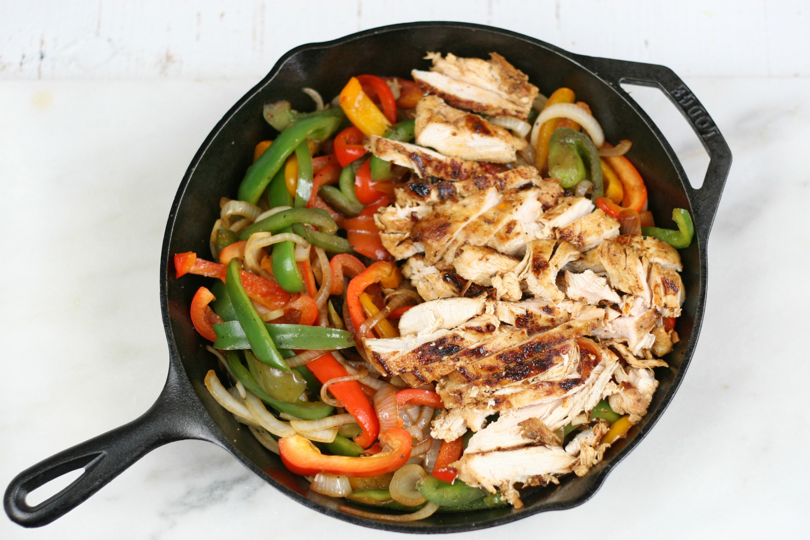

The Cast Iron Skillet Blog
The Cast Iron Skillet BlogCreamy Paprika Chicken Skillet with Bell Peppers Recipe

Ingredients
- 1 pound boneless, skinless chicken breasts, cut into 1-inch pieces
- 1 teaspoon smoked paprika
- 1/2 teaspoon garlic powder
- 1/2 teaspoon onion powder
- 1/4 teaspoon cayenne pepper
- 1/2 teaspoon salt
- 1/4 teaspoon black pepper
- 2 tablespoons olive oil
- 1 large red bell pepper, chopped
- 1 large onion, chopped
- 3 cloves garlic, minced
- 1/2 cup chicken broth
- 1/2 cup heavy cream
- 2 tablespoons chopped fresh parsley
Instructions
- Preheat your oven to 400°F (200°C) and place a 10-inch cast iron skillet in the oven while it preheats.
- In a small bowl, mix together the smoked paprika, garlic powder, onion powder, cayenne pepper, salt, and black pepper. Season the chicken pieces with the spice mixture.
- Remove the skillet from the oven (careful, it will be hot!) and add the olive oil. Add the seasoned chicken and cook over medium-high heat until browned on all sides, about 5 minutes.
- Add the chopped red bell pepper, onion, and minced garlic to the skillet and cook until the vegetables are tender, about 5-7 minutes.
- Pour in the chicken broth and heavy cream, stirring to combine. Bring the mixture to a simmer and cook until the sauce has thickened, about 5 minutes.
- Transfer the skillet to the preheated oven and bake for 10-15 minutes or until the chicken is cooked through and the sauce is bubbly.
- Remove from the oven and sprinkle with chopped fresh parsley. Serve hot with rice or crusty bread.